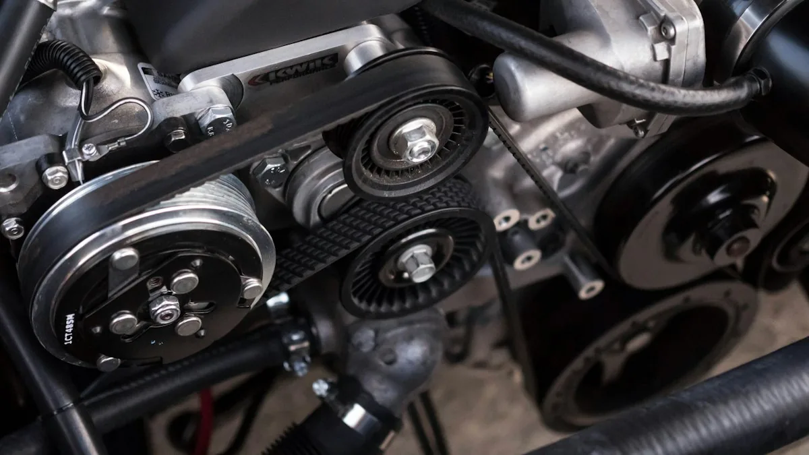
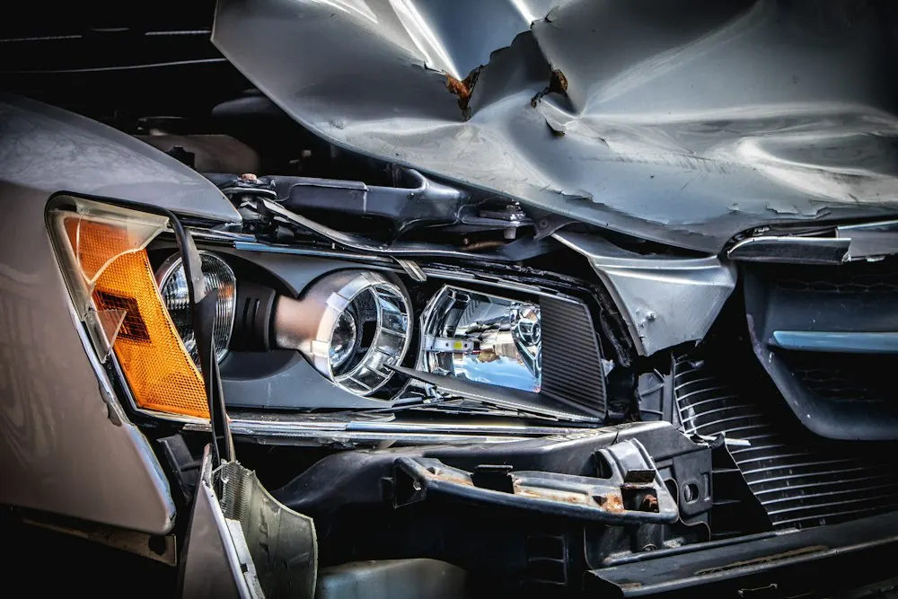

Компʼютерна діагностика
Електронні системи та помилки

Автосервіс / Черкаси
Спершу знаходимо причину.
Потім повертаємо вас на дорогу.
01 / Перелік робіт
Електронні системи та помилки
Підвіска, кермування, гальма
Мастило, фільтри, перевірка вузлів
Діагностика й ремонт агрегатів
Орієнтовні демо-ціни. Вартість залежить від авто й обсягу робіт.
02 / Принцип роботи
Узгоджуємо перелік робіт і пояснюємо кожну позицію.
Повідомляємо терміни до ремонту та тримаємо в курсі.
Пропонуємо варіанти під автомобіль і ваш бюджет.
03 / Різниця видима
Ілюстративне порівняння різних авто. Не є звітом про реальний ремонт.

ДОРухайте повзунок, щоб порівняти ↔
Показники вигадані для демо-концепту.
04 / Зворотний звʼязок
«Пояснили проблему просто, погодили кошторис і вклалися в термін.»
«Показали, що потрібно замінити зараз, а що може почекати.»
Вигадані демо-відгуки.
Черкаси / Чекаємо на вас
Черкаси · демонстраційна адреса
Пн–Сб · 09:00–19:00
Неділя · вихідний
Контакти — плейсхолдери. Заклад вигаданий.